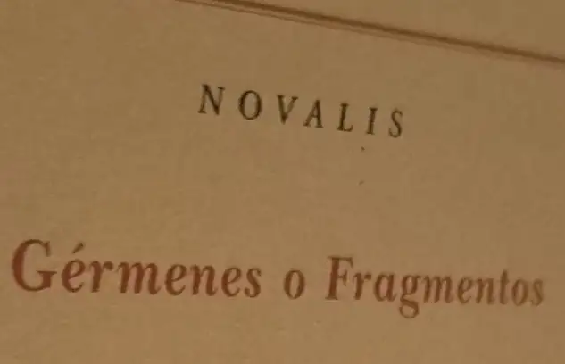

Sobre «El concepto de crítica de arte en el romanticismo alemán» (II).

La fuente principal que toma Benjamin son los trabajos en se publican en Athenäum, una revista efímera tirada, como todas las buenas revistas, fruto de una unidad intelectual de esas que no abundan en la historia del pensamiento filosófico. A ella se suman las «Lecciones Windischmann«, aunque ya con una cierta distancia ante el viraje del autor, además de la multitud de citas de Novalis que hay que tomar con las debidas precauciones (ver la nota 48 de la página 37).
La primera parte se detiene en la noción de reflexión desde Fichte hasta las concepciones protorrománticas. Un ensimismamiento del pensamiento que busca la intuición intelectual como horizonte para las operaciones propias de búsqueda de lo Absoluto. Fichte apela a la posición como término complementario a la posición como segunda acción (infinita) del yo (pág. 25). Lo cierto es que la caracterización de esta última queda en Benjamin relegada por la reflexión, además por la inmadurez en el planteamiento de Fichte, que remite a la versión perfeccionada de Hegel. La posición en sentido tético implica un no-Yo que da lugar al movimiento hegeliano. De todos modos, la clave está en la noción de reflexión que, para los «románticos tempranos», implica una «infinitud de la conexión» (pág. 28), un holismo, que, en definitiva, me parece la característica distintiva de estos pensadores. Quizá así se puedan llegar a entender estas sentencias sublimes que Benjamin les atribuye:
«En la reflexión del pensar romántica supera al ser y a la posición. Los románticos parten del mero pensarse-a-sí-mismo como fenómeno; es apropiado para todo, pues todo es sí mismo» (pág 31).
El análisis de Benjamin sobre esas operaciones reflexivas se puede plantear como una especie de sucesión definida por recurrencia pero cuya infinitud no se dirige a la convergencia en el Absoluto sino que, por decirlo así, este se «alcanza» en la conexión de todo con todo. ¿No es esta la definición del holismo? Me parecen cuestiones interesantes porque esta voluntad de aprehenderlo todo constituye quizá el elemento identificador del romanticismo. Schlegel y Novalis consideran que, según su planteamiento, la posición negativa es innecesaria y en esto se separan de Fichte. El regreso reflexivo ya conduce a la Infinitud.
De todos modos, estos planteamientos pertenecen a la clase en que las palabras comienzan a ser ya insuficientes para expresar lo que se quiera decir. Al final del texto Benjamin recurre a la noción de «deslumbramiento», ya en el entorno específico de la crítica del arte de Schlegel. Puede que sea la mejor síntesis para definir el estado romántico y los efectos que causa sobre sus lectores, también su atractivo, por supuesto. La cuestión del sistema ocupa el final del capítulo. En el caso de Schlegel la coordinación entre concepto y sistema (absoluto, podríamos apostillar) es fundamentalmente ejercida en el interior del lenguaje más que a través de «intuiciones intelectuales» (ver pág. 48). Nuevamente vuelve a contemplarse en su inmarcesible perfección el holismo antedicho en este plano. El concepto, cualquiera de ello, ya tiene ínsito en sí en conjunto del Sistema: «Pues el término, el concepto, contenía para él [Schlegel] el germen del sistema, no siendo en el fondo como tal sino un sistema preformado». «Así, un sistema sin duda habría de ser más bien llamado solamente un concepto omnicomprensivo [texto citado de Novalis]» (ver págs. 48 y 49). Aquí ya comienza Benjamin a vincular el asunto con el lenguaje y la forma del Arte, además con la cuestión central de la crítica. Y son sus afirmaciones verdaderamente chocantes en un principio (y magníficas a partes iguales: «aludían con este concepto [de crítica] a lo que se puede llamar la necesaria imperfección de la infalibilidad», porque marcan el límite respecto a la interpretación (no voy a decir crítica) del protorromanticismo:
Por el contrario, el mismo concepto romántico de crítica es un caso ejemplar de terminologia mística, y por esta razón este trabajo no es, pues, una restitución de la teoría romántica de la crítica de arte, sino el análisis de su concepto. Este análisis no puede aquí tocar todavía a su contenido, sino sólo a sus relaciones terminológicas. Éstas nos conducen más allá del significado estricto de la palabra crítica como crítica de arte, debiéndose por tanto echar un vistazo a la curiosa concatenación en virtud de la cual el concepto de crítica, junto al término que le da su nombre, se convirtió en el principal concepto esotérico de la escuela romántica. (Benjamin, 2024, p. 51).
«Idealismo mágico» es la designación acertadísima de Novalis para este planteamiento. ¿Cómo puede contener tanto atractivo a pesar de su evidente inefabilidad mística? ¿Será un fenómeno metafísico al que es proclive nuestra débil racionalidad? De algún modo sus planteamiento, una vez encarnados en la materialidad de la que nosotros no podemos desprendernos (recordemos el precio que hubieron de pagar los románticos, como Heinrich von Kleist, cuando descendieron al teatro del mundo), revelan una sintonía fundamental con concepciones constituyentes de nuestro tiempo. Luego veremos algunos ejemplos ilustres.
Publicado originalmente en PortalEdu. Texto e imágenes conservados de la publicación original.